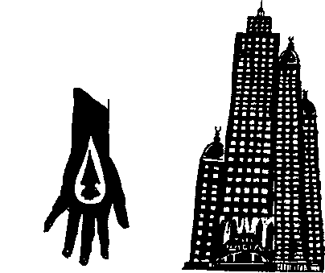

Suat Ferid erkenden kalktı. Kitap ve ciltlerin durduğu büyük odayı güzelce kilitledi. Lalettayin Lâlendam’ı koltuğunun altına kıstırdı. Cep telefonuyla bir taksi çağırdı. Gelen şoföre sahile inip İstinye’ye dönmesini, oradan Maslak’a çıkmasını söyledi...
YazmKule’de Sayın Kırımçak kendisini büyük törenlerle karşıladı:
“Gözlerimde yaşlarla, dört saat kafamı kaldırmadan okudum, bitirdim... Bu sizin başyapıtınız Sayın Ceylani! Bu bir dil abidesi... O.F.M. rumuzu ile yazdığınız kısımda artık gülmekten altıma yapıyordum... tuvalete zor yetiştim... Leman kapının önünden okumaya devam etti... Şaheser!... muhteşem... yanlız her zamanki gibi dostane önerilerim olacak... Alınmazsınız, sizi bilirim..."
“Buyrun, Sayın Kırımçak."
“Efendim, evvela Erhan Jüt ile pek hoş bir edebi münazaraya giriyorsunuz ki cidden tebrikler! Bunu muhakkak daha önce kendisiyle konuşmuşsunuzdur... nefis... nefis...” Suat Ferid asıl önemli lafların hemen gelmeyeceğini, adamın daha bir süre yıkama yağlama faaliyetine devam edeceğini hissetti. Kibar bir insan olduğu için “sadede gelelim lütfen” demedi. Onun yerine, son yirmi yılda İhsan Bey’de vaki değişiklikleri düşünerek vakit geçirmek yolunu seçti. İlk karşılaştıklarında adamın yeşil bir parkası, insanı sağlı sollu iki tokatla bayıltabilecek kadar kaim ve güçlü bıyıkları ve garip, salkım saçak favorileri vardı. Ensesinde kıvrımlar yapan siyah saçlan, doğal yağların yardımıyla arkaya doğru taranmıştı.
Sonraki yıllarda ön tarafı ve tepesi açılmış bir başı, uzun atkuyruklu bir saçı ve karman çorman bir sakalı olmuştu. Şimdiyse yuvarlak, biçimli başı Cavlaki dervişlerinde olduğu –evet olduğu, ne zaman?– tarzda, ayna gibi kazınmış, bıyık ve sakalları keza matruş, pek sevimli bir hal içindeydi.
“...yanlız” sözünü duyunca kulaktandı:
“Dilini eşşekarıları soksun İhsan... Evrenler değişti, hâlâ yalnız demeyi öğrenemedin. Ne ‘yanlız’ı?”
Adam devam ediyordu:
“Yanlız Lorries kitabı üzerine biraz farklı düşünüyoruz... Asıl mesele olan, biz Batılılaşmış Türklerin seçimsizliği ve çözümsüzlüğü olayını hafif tertip atlamış durumdasınız. Hani iki ucu...” Suat adamın sözünü kesti:
“Bakın İhsan Bey, herhangi bir şey atlamadım. Ben naçizane o ikilem ile ilgilenmiyorum. İlgilenmediğimi de görmek ve göstermek zorunda değilim...”
Biraz sert kaçmıştı. İhsan Bey dehşetli bir kıvırtmaca yaptı: “Aman üstat, ben de onu söylüyorum ya... Hafif tertip atlamışsınız diyorum, ne iyi yapmışsınız!... Keşke ağır tertip atlayaydınız! Elinize sağlık, Türkiye sıkıldı artık bu söylemden hocam... Ne oyunbaz, ne neşeli bir metin olmuş sizinki, haddim olmayarak bir kez daha bravo..."
Suat Ferid damdan düşer gibi sordu:
“Peki şu Berke’nin kendi hanedanını ilga etmesi hadisesine ne diyorsunuz?”
İhsan Bey’in yüzünde bir karışıklık oldu: “Ben de oraya geliyordum efendim. Yayınevimizin avukatlarıyla görüştüm. Tam on üç ayrı yasayı ihlal ediyoruz burada..."
“Mesela?”
“Mesela Devlet-i Âliyye-i Ercümend‘den müdevver Cerâim Kanunnamesi madde birin ağır şekilde ihlali söz konusu...”
Suat’ın soran bakıştan karşısında devam etti:
“Şey... Ben şahsen çok aldırmam ama ‘Ercü’ diyerek tahfif ve tezyif suçu işliyormuşsunuz...”
“Aman canım, bütün günahım bu olsun, değiştirin Ercûmend yapın, olsun bitsin...”
“Teşekkürler, sizin gibi büyük bir yazara da bu yüce gönüllülük yakışır... Ama başka hususlar da var. Fikir olarak bile olsa, paramızın bol sıfırlı milyonlar mertebesine çıkabileceğini telmih ediyorsunuz ki, mali bir suç olduğu için şimdi durduk yerde ceza vermeyelim... Sonra... sonra... eski kitapların sanki korunması gerektiği, kâğıt hamuru yapılmaması gerektiği gibi bir intiba ediniyor insan...”
“Anlamadım, gerçekten de öyle değil midir?"
Beti benzi atmıştı Ihsan Kırımçak’ın:
“Efendim, şahsi düşüncelerimizin ne önemi var? Belki de öyledir, ama kanun açık. Basın Yayın Zorunlulukları Yasasının tam dört ayrı maddesini yine ağır şekilde ihlal etmiş oluruz burada...”
“Hepsi bu kadar mı?”
“Maalesef, bu türden irili ufaklı, çoğu hafif veya orta şiddette daha birkaç ihlal var... Bir de şeeey..."
“İhsan Bey buyrun, çekinmeyin...”
Sayın Kırımçak sesini alçalttı:
“Lütfen yavaş! Leman olacak casus cadı duyabilir... Sayın Ceylani siz aklınızı peynir ekmekle mi yediniz Allah aşkına? Nasıl olur da, bir değil tam iki adet tabu kelimeyi kör gözüm parmağına kullanırsınız?"
“Neymiş onlar?”
“Efendim ilga hadisesini birinin işlemesi mukadderdi, bekliyorduk. Kelimenin kendisini kullanmamak şartıyla aslında işlenebilirmiş... Ama bundan çok daha önemlisi, siz ‘restorasyon’ kelimesini kullanıyorsunuz!”
Suat aptal aptal bakıyordu...
“Evinizi restore etmekten bahsediyorsunuz... Üstelik restorasyon sırasında kullanılacak iki adet başka ahşap eve telmih var...”
“Yahu ne telmihi? Oturduğum ev o benim...”
“Biliyorum üstat... maalesef! Üstelik bizim açtığımız krediyle alınmış... Yandık biz... Topumuz yandık... Dahası Lâlgiller de öbüründe oturacakmış...”
Suat yavaş yavaş sabırsızlanmaya başlamıştı.
“İhsan Bey bunların ne kıymet-i harbiyesi var?”
Zavallı adam acı acı güldü:
“Tuhaf olmayın lütfen. Sanki aynı sözcükler cumhuriyetinde yaşamıyoruz! Sanki siz başka bir evrendeki Türkiye’den geldiniz... Büyük Çağrışım Denetim ve İmha Lügati’ni hiç karıştırmadan mı yazıyorsunuz kuzum siz? Ev, ülke, memleket, yurt demektir. Yıkılası ve zaten yıkılmış bir geçmişten kalma bir şeyin restorasyonu da ne demek oluyor? Üstelik bu hadise olurken, bir değil iki ayrı eve çıkıyorsunuz. Ne oluyor? Ev bölünmüş... Şeytan kulağına kurşun, inkısâma uğramış. Çok rica ediyorum! Biraz daha hassasiyet lütfen.”
Suat Ferid içten gelen bir merakla sordu:
“Ne yapabiliriz?”
“Basit efendim, basit! Açacağız sözlüğü, hoop... ilga yerine ‘kaldırma’, restorasyon yerine ‘onarma’ diyeceğiz, olacak bitecek...”
“İhsan Bey, peki olsun, valla anlamadım...”
“Nee, olsun mu? Allah’ım bana bugünleri gösterdiğin için bin şükür... Olsun ha! Bu ne âlicenaplık, bu ne fedakârlık... Böyle vatansever yazarlar oldukça tabii bizim sırtımız yere gelmez... Olsun... Olsun haa!”
Suat Ferid bir zil takıp oynamadığı kalan adama acıyarak baktı. Yabancı bir ülkede yerlilerin halini tavrını, gelenek göreneklerini beğenmediğini saklayamayan bir turist edasıyla.
“Peki nasıl oluyor da sokaklarda diz boyu düzensizlik, karmaşa, keşmekeş hüküm sürebiliyor bu laf cumhuriyetinde? Nasıl oluyor da ölü kediler, devletinizin atası olan Ercümend devletinin kurucusunu temsil eden heykelin dibinde yatabiliyor, atın cinsel organlarını dikizleyerek cam gözleri ile tacizde bulunabiliyorlar?”
İhsan Kırımçak buna bir soruyla cevap verdi:
“Suat Bey, siz sokaklarda Ercümend döneminden kalma bir tanecik mimari eser gördünüz mü? Pekâlâ biliyorsunuz ki o bir söz ve yazı imparatorluğu idi, Devlet-i Bîmanend-i Ercümend bir kanun ve mevzuat abidesiydi. Şimdi daha da kemale erdi. Resmi sözlüğünde kaç kelime olabileceğini kanun ile kısıtlayıp, bizatihi bu kanunun bile kaç kelime ile yazılacağını on kelimelik başka bir kanun ile belirleyen bir ikinci medeniyeti bana gösterebilir misiniz?”
Suat afallamış bir şekilde sordu:
“Ya Avrupa?”
“Bizi ne diye apar topar Avrupa’ya aldılar zannediyorsunuz? Aynı dil disiplini şimdi orada da hüküm fermadır... Biz girdikten sonra uzman bürokratlarımız Brüksel bürokrasisini bir silkelediler ki... Küffar önce su koyup itiraz etti ama şimdi kuzuya döndüler... Aaa! Ama beni tiye alıp nasıl da söyletiyorsunuz... Sanki uzaydan geldiniz de bilmiyorsunuz... Ama dostum, bu da sizin Tanrı vergisi yeteneğiniz... Adeta bir uzaylı gibi anlatmışsınız memleketi. Millet okurken kırılacak... Eee... şimdi anlaştığımız üzere reklam ve promosyon işini konuşalım efenim.”
Konuştular: Kitap çıkmadan günler önce sokaklara afişler yapıştırılacak, “Kimdir O? Sözün ve Yazının İmparatoru Kim?" diye sorulacak ve haftalar süren bir şartlandırmadan sonra Suat Ferid’in II. Berke Han suretinde büyük kıta bir resmi asılarak üzerine sadece şunlar yazılacaktı:
“O’dur O. O ne derse o olur."
Kitabı almak için müracaat edenler arasında çekilecek kura ile, ilk 500.000 kişiye paralarını bastırıp kitabı almak ayrıcalığı bir nevi bahşedilmiş gibi olacaktı. Anlaştılar.
Suat Ferid hemen oracıkta kendisi için Leman Hanım tarafından tasarlanmış özel giysilerle bir resim çektirdi. Kadın onu tüm duvarlarına siyah volkan kumu püskürtülerek karartılmış bir odaya almış, Suat’ın itirazlarına aldırmadan Berke kostümünü Suat’ın geniş eğnine elleriyle giydirmiş, bu işi yaparken de kulağına eğilerek şunları fısıldamıştı:
“İhsan hafiyesinden uzak dur... Asla güvenme! Mutedil cumhuriyetçi bir görüntü vermeye gayret eder... Ama dehşetli bir neo-Ercümendisttir...”
Suat Ferid yine faka basmıştı. Saf saf sordu:
“Ama o zaman niye benim Berke olarak piyasaya çıkmamı istesin ki?”
Kadın, çevresi neredeyse Suat’ınkine eş göbeğini hoplatarak güldü:
“İlahi ağbi sen hiç akıllanmayacaksın... Ottomanist olarak fişlenmenin bir neo-Ercümendiste sağlayacağı koruyucu kalkanı düşünmüyorsun bile!”
Sonra da yeşil lenslerinden birini çıkararak, tek ve simsiyah bir zeytin tanesini andıran gözüyle anlamlı anlamlı baktı. Yeşil bir Zümrüd-ü Anka çeliği keskinliğindeki öbür gözü anlamsız anlamsız uzaklara bakıyordu. Suat bu noktada kendisinden “Mehlika sen haa!” demesinin beklendiğini anladı:
“Mehlika, sen haa!”
“Şükür kavuşturana ağbi! Ama sakın sarılayım, her zamanki gibi sulu gözlülük filan edeyim deme, durumu çakozlamasınlar...”
“Peki, Ottomanist olarak bilinmek tehlikeli değil mi?”
“Ağbi gülünç olma, at izi it izine karışmış, memlekette kimin eli kimin cebinde belli değil. Birkaç tane Ottomanist derintisini kim ciddiye alır Allah aşkına!”
Suat Ferid YazınKule’den ayrılırken “yav entrika şeytan gibi damarlarına girmiş bu milletin, şahmeran gibi zihnine çöreklenmiş! Kâinat değişikliği filan vız geliyor tırıs gidiyor" diye düşündü.
“Osmanlı ve Ercümend Yapıtları Ezimevi’ne" talimatını verdi taksi şoförüne. Sürüm Yayınları’ndan çıkmadan, ona masada oturan kızdan bu kültürün müzesine böyle dendiğini öğrenmişti. Bön bön bakan kıza müze kelimesini bir türlü anlatamamış, Frenkçesini söylemiş, ancak öyle anlaşabilmişlerdi.
Şans eseri, dehşetli konuşan bir şofördü. “Hı...hı...” diye kafa sallayacağına adamı iyi dinlemiş olsa, gittiği yerde neyle karşılaşacağını anlardı. Ama bin yıllık Suat Ferid olarak o da pek değişmemişti.
Yedikule önünde durduklarında pek şaşırdı. Pargalı Abram Sarayı gibi bir yer bekliyordu. İçeri girdi. Doğruca müdüriyete gitti. Kulelerin ortasında bir yerlere inşa edilmiş, kendi tahta evine benzeyen bir barakaydı müdürlük. Kibar görünüşlü genç bir kadın kendisini karşıladı. Suat, biraz da, tecrübesiz olduğunu zannettiği kızı etkilemek için, çantasından murassa, baştan başa fildişi zemin üzerine yakut ve zebercet kakmalı nefis bir Osmanlı cildi çıkardı ve bir şey söylemeden masanın üzerine koydu. Kadın alışkın hareketlerle duvardaki raftan kalın bir kitap çıkardı. Bir miktar arandıktan sonra, ortalarda bir yerde,
“A-ha" dedi.
Suat kadının parmağını koyduğu renkli resme hayretle baktı. Getirdiği cildin aynısıydı. Müze müdürü hanım cildi aldı ve masasının yanında duran tuhaf, parlak çelikten aletin aralığına dikkatle yerleştirerek bir düğmeye bastı. Alet inanılmaz gürültülerle çalışarak bir iki saniyede cildi, deyim yerindeyse yedi bitirdi. Suat fildişi ve değerli taş tozlarının aletin çöp kutusuna akışını hayretle seyretti.
Sonradan adının İnci Miras olduğunu öğreneceği genç kadın,
“Buyrun efendim, bu makbuzunuz," diyerek bir kâğıt uzattı, “Biri daha eksildi... Lanet olası şeyler... İnşallah bıçakları eğriltmemiştir! Şey, kusura bakmayın, maalesef ödenek yok da yenisini alamıyoruz... Yoksa siz vatandaşlık görevinizi yaptınız diye söyleniyor değilim...”
“Katalogunuza bakabilir miyim?” diyerek kalın kitabı aldı Suat.
“Şey... Birtakım eksikleri var ama buyrun....”
Suat Ferid, son derece kaliteli basılmış ve gayet ilmi açıklamalarla dolu metni gözden geçirdi. Yok Olması Gereken Değerlerimiz: Osmanlı ve Ercümend Başyapıtları. Derleyen: Osman Hulûsi Gördüm.
Kitabı düşürmemek için belli bir gayret sarf ederek önsözü gözden geçirdi. “Osman Hulûsi,” Suat’ın kendi evinde duranlar dahil pek çok cildi büyük bir vukufla anlatıyordu. Epeycesine “şahsi kütüphanemizde idi" şerhini düşmüştü. Kitabı biraz daha elinde tutsa sanki şüphe çekecekmiş gibi geldi Suat’a. Görünür bir aceleyle iade etti,
“Fedakâr ve titiz hizmetleriniz için candan tebrikler” diyerek kendini dışarı attı. Kadın ayağa bile kalkmamıştı.
Suat Ferid kulelerin kaim demir levhalarla kaplı meşe kapısından dışarı çıktı. Kapı kanatlarının birinin pervaza yakınca bir yerinde, saplanmış çelik bir kargı gördü. Kulakları uğulduyordu.
“Allah kahretsin, bunu ben kendi ellerimle yaptım” diye son günlerin amentüsünü tekrarladı.
Perişan kılıklı gençten bir adam önünü kesmiş, sanki bir şeyler bekliyordu. Elini cebine attı:
“Hiç bozukluğum kalmamış.”
Adam “boş ver" gibi algılanacak bir işaret yaptı ve kısık bir sesle,
“Elimde nefis Osmanlı-Ercûmend eserleri var," dedi, “İster misin abi?”
Yeni topluma anında uyum sağlayan Suat kahkahalarla güldü:
“Kim ne yapsın onları be adam!”
“Yoo, öyle demeyin... İçerde-dışarda meraklısı çok."
“İyi ama?"
“Güzel ağabeycim, yoksa sen de gaza gelip elindekini ezimevine mi kaptırdın? Sende daha varsa bana sat... Takas da yaparız... Buyur kartımı...”
Suat adamın verdiği kartı cebine sokuşturdu, hiçbir şey söylemeden oradan ayrıldı. Birkaç dakika sonra, takside bu karta baktığı zaman öyle yakası açılmadık bir küfür savurdu ki, şoförden utandı.
“Abicim sonuna kadar haklısın... Vatandaşı ne hale getirdi bunlar... Topunun bok canına!"
“Mehlika”nın dediklerini hatırladı. Biraz utangaç;
“Yok canım, kimseyle alıp veremediğim yok... Şey, benim manitadan bir madik yedik de...”
“Haa, o başka... Bizde o yollar yok... bize pek gelmez... ama icabında saygı da duyarız... müşterinin kendi tercihidir... Hami ise Hami... Kâni ise Kâni, bize ne?”
Kulaklarına kadar kızaran Suat, adamın parasını vererek inerken laf yetiştiriyordu hâlâ:
“Nüfus memuru yanlış yazmış birader... Hüma’yı Hami duymuş... Kız neler çekti!"
Şoför gaza basıp uzaklaşırken “maço piç” diye düşündü...
Dayanamadı, daha ikinci arabadayken, “Hami Şeker Mezat ve Onarım Evi. Her türlü antikanız itina ile tamir edilir” yazan kartın üzerindeki numarayı aradı;
“Adım Suat Ferid, elimde bir iki adet onarıma muhtaç deri cilt var.”
Gayet tanıdık, pek yapışkan bir sesle sözleşti, malum bazı sesler buzdolabına dökülüp soğukta kalmış reçel gibi pek ağdalı, pek yapışkan olur. Tabii, tabii müsaittiler... hemen... acaba... hemen... gelme lütuf ve inayetinde bulunurlar mıydı acaba?
Evine uğramadan arabayı Asya-ı Vustâ yakasına geçirdi. Kuzguncuk’ta eski, fakat tamir edilmiş bir evin önünde indi.
Sütbeyaz sakalı, iyice eğrilmiş sol bacağı, sırtında bol mavi cüppesiyle Hami Şeker, Suat’ı mermer merdivenlerin başında karşıladı. Gözlerinin kenarında kurumuş kanlı yaşlar vardı.
“Sultanım, üst kata çıkalım.”
Çıktılar. Hami çalışanlarına kendilerini kimsenin rahatsız etmemesini söylemişti. Kapıyı kapadı. Kendisini Suat’ın ayakları dibine bıraktı:
“Meded ya Hankan” diye inledi. Suat adama tiksinerek baktı...
“Medet ya sahib kıran-ı benî Âdem...”
“Özür dilerim ama ben sandığınız kişi değilim...”
“Böyle deyip Hami kulunu dilhûn eyleme ey hünkâr... O sensin sen... Hami’nin ıztırâbı artık tahammülfersâ oldu... Bitsin... Sultanım... Çek bunu! Bunu ancak sen çekebilirsin...”
Hami mavi cüppesini çıkardı. Göğsünün sağ tarafında, yalnızca pek örselenmiş kökü görünen, korkunç, mavi-gri bir diken azmanı vardı. Suat,
“Şitah” dedi.
Hami’nin gözleri sevinçten sulandı. Döşemeye iki kırmızı damla düştü.
“Benim ben olduğumu nereden bildin?” dedi Suat.
Hami konuşmadan başıyla pencereyi işaret etti. Birtakım fırçalı-kovalı adamlar karşıdaki inşaatın tahta perdelerine yüzlerce afişi itinayla yapıştırıyorlardı. Suat dikkatle baktı. İkiye iki ebadındaki kendi kavuklu, sorguçlu suratı, biteviye tekrarlarla uzayıp gidiyordu.
Afişin üzerinde kalın siyah harflerle “Odur O. O ne derse o olur” faslı yazılıydı.
“Bu ne sürat? Daha iki üç saat önce resmimi çektiler,” diye mırıldandı, “hem önce ‘O kimdir O’ yazacaklardı...”
“Sultanım, bir girdab-ı zamana veya bir hırâmân-ı seylâba kapılmış olacaksınız... Tam üç haftadır o dediğiniz afişler durur orada... Üç haftadır Hami kulunun yüreği ağzında dolaşır... medet ya ebuşitah!"
Suat’ın kadim tiksintisine biraz da acıma eklendi. Zavallı Hami, şu anda yapıştırıldığını gözleriyle gördüğü afişler için “üç haftadır durur" diyecek kadar salak ve sahtekârdı.
“Ne yapmam gerekiyor?”
“Sultanım, mübarek ellerinizle tutup çekin, sağ taraftan çıkarıp, sola vurun bitsin bu azab...”
Suat dikeni tutarak aniden çekti. Hami derin bir nefes aldı:
“Sizin O olduğunuzu biliyordum... Şimdi siz de emin oldunuz mu? Şitah olduysa eğer bir sancak, kesemez onu ne balta ne nacak, ben sözümdeyim ey kanlı hünkâr, vuran çıkartır şitahı ancak...”
Dramatik bir edayla göğsünü gererek bekledi. Suat şitahı yere attı, arkasını döndü, odadan çıktı. Hami arkasından yetişti:
“Bana bunu yapma sultanım... Merhamet! Sebkat eden emeğime hürmeten beni bu kâinatta yaşamak zorunda bırakma...”
Suat hiç tınmadan yoluna devam etti. Hami tüm saygı gösterilerini bir yana bırakarak Suat’ın kableltarih dönemlerden kalma turuncu-sarı montunun yenine yapıştı:
“Beni böyle piç gibi ortada bırakamazsın... Acımı ver... acımı geri ver hiç olmazsa!... Acısız yaşamak bu kâinatta cezaların en büyüğü... Zalim olma sultanım... Hami kuluna acı...”
Sesi gittikçe ölüyor, yavaşlıyordu. Malum, ses ölür, gövde kalır. Yani teorik olarak.
Suat, Hami’nin atölyesinden ayrıldı. Çocuğun biri üzerlerine minik madeni kapaklar kapatılmış üç adet çayla içeri giriyordu, dalgın dalgın düşündü:
“Ben bunu daha önce nerede gördüm ?..."
Bilerek tahta perdenin olduğu yerden geçti. Kendi yüzü, onlarca çoğalmış bir halde gözlerinin içine bakıyordu. Dikkatle baktı. Resimlerdeki yüzünün inanılmaz zalim bir ifadesi vardı.
Uzun, çenesinde incelen kızıl sakallarının tellerinde minik saydam kitapçıkları gördü... Burnu bir atmaca gagası gibi yere bakıyordu, gözlerinde deli deli pırıltılar... Elini sakallarına götürdü.
Kısacıktı.
“Bu resim bugün çekilmiş olamaz" diye düşündü. Düşüncesine kahkahalarla güldü.
Yolda telefonu çaldı. Arayan “Mehlika” idi:
“Suat Ağbi bir hatırlatayım istedim... Yarın önce kitap fuarında çekilişler var, sonra da Paradise Hotel’de Altın Boynuz salonunda konuşacaksın.”
Suat teşekkür etti. Bu toplantıları hatırlamıyordu ama “bacısı” hatırlatıyordu ya, bununla iktifa etti. Evinin yakınlarındaki bakkaldan sadece peynir ekmek aldı. Canı başka bir şey istemiyordu.
Bakkalın iki büklüm durmasına bir anlam vermeye çalışıyordu ki adam konuştu:
“Beyim söyle de toptancılar biraz daha ucuz versin, biz de vatandaşa ucuz verelim!”
“Olur söylerim” dedi Suat. Evine ulaştı. İlk işi kıymetli cilt ve kitaplarının durduğu odayı kolaçan etmek oldu. Görünürde bir değişiklik yoktu. Yan eve geçti. Lâlgiller henüz eşyalarını taşımamışlardı. Bir portakal sandığının üzerinde Lâlendam oturuyordu. Yüzü yine inanılmaz asıktı.
“Bak, Efendina isen Efendinalığını bil. Senin, benim adımı kitabına vermeye bir hakkın var mı? Böyle giderse ailemizden bir Efendinayı boşayan ilk kadın olacağım!”
“Şey, sen okuyamazsın ki... Bunu nereden biliyorsun?”
“Dünya âlem duymuş, bir ben mi kusur kalacaktım? Televizyon diye bir alet var değil mi? Oralarda çan çan konuşursun ama ben duyamam, öyle mi?”
Var mıydı? Suat hatırlamadı. Konuşmuş muydu? Olabilirdi. Olmaz olmaz demiyordu, artık olmaz olmazdı hiç. Kız çok kızmıştı:
“Benimle de konuşmaya geldiler bugün. Senin göğsüne hiç ıslak ve çıplak yatmış mıyım, o sahne gerçek miymiş, öyle bir resmimi çekebilirler miymiş? Toplumumuz merak ediyormuş. İnsanda biraz ar-hayâ olur! Kendi helalini böyle anlatmaz... Bari biraz aklın olaydı da adımı Gülbeden, Sûmbülten filan yapaydın! Lâlgil namusunu üç paralık ettin ve bunun kendi namusun da olduğunu düşünmüyorsun bile...”
Suat’ın içinde bir Asya-ı Vustâ daman kabarmaya başladı, mahremiyeti çiğneniyormuş gibi hissediyordu. Kızı yakasından tuttu, ayaklarını yerden keserek kaldırdı:
“Ne anlattın onlara?" diye bağırdı.
Kız omzunu silkti.
“Ne olduysa, gerçeği... Birazdan Kanal Banal’de yayınlanacak... Çok merak ediyorsan bekle...”
Suat’ın elleri titremeye başladı.
“Aç şunu” diye gürledi.
Beş on dakika sonra, Kanal Banal’in histerik sesli sunucusunun “azzs sonra... yer yerinden oynayacak azzs sonra...” diye tıslayan sesi kulaklarında yankıla,nıyordu. Adamlar önce Suat’la yapılmış mükemmel bir söyleşi yayınladılar: Osman Ferdi Mürdüm’ü sahtekârlık ve hırsızlıkla suçluyordu. Gerçekten de konuşmuş olabilirdi veya bilgisayar yardımı ile üretilmiş malum tezgâh işlerinden biri olabilirdi. Suat hatırlamıyordu ama Mürdüm’ün samimiyetine böyle bir karşılık verilmesine üzüldü.
Sonra Lâlendam! Lüzumlu lüzumsuz, “onu hiç böyle görmeedinizzs!”, “şakası yok gerçekten görmedinizss”, “çünkü onu hiç tanımıyorsunuzss...” anonslarıyla verilen aralardan dolayı elli dakikaya yayılan fakat aslında on on beş dakika süren gösteri sırasında birkaç elbise değiştiriyor ve,
“Evet yattım, ne var bunda?” diyordu. Bu işe enikonu hazırlandığı anlaşılan kızın, manken veya şarkıcı olup olmayacağı yolundaki soruya da cevabı hazırdı:
“Neden olmasın? Benim Anette’ten veya Babette’ten neyim eksik, Allah’ıma binler şükür...”
Peki Lâlendam Hanım acaba politikaya girmeyi düşünür müydü?
“Kısmetse olur, halkım böyle bir talepte bulunur, teveccüh gösterirse niye olmasın ki?"
En sonunda da, ağır bir klasik parça olan “Vuslatın demi olmaz, meğerki iptida iftirak olsun”u icra ediyordu, Göğüslerinin yüzde altmışını, sırtının hepsini dışarıda bırakan, siyah, parlak, yırtmaçlı bir kılık giymiş, sanki yıllardır bu işi yapıyormuşçasına bir rahatlıkla “okuyordu."
Suat’ı en çok kızdıran, kızın saçlarının ıslaklığı ve bu saçlardan göğsüne veya ani dönüşlerinde sırtına damlayan suyun zihninde uyandırdığı müstehcenlik duygusu oldu. Öfkesini yenmeye çalışarak Lâlendam’ı payladı:
“Öyle pek dertlenecek bir halin yok... Adamlar sormuş, sen de bülbül gibi şakımış, kırıta kırıta döktürmüşsün maşallah...”
“Eee, herhalde! İş bu noktaya gelince ne yapsaydım yani? Senin hoşuna gitmiyor olabilir ama bu belki de benim ailemin kâğıt toplamaktan kurtulmasını sağlar...”
Suat’ın içinde eski bir kalıp kırıldı, içinden yeni dökülmüş maden gibi ışıldayan beyaz, sıcak ve parlak bir hiddet çıktı, şavkı Lâlendam’ın bedenine vurdu.
“Talâk-ı selâse ile boşsun... boş ol... boş ol... boş ol...”
Lâlendam mey dolu bir cam sürahi oldu. Bir yerlerde bir çatlağı varmış gibi sızdırmaya başladı. Hamam-bodruma kaçmak için dışarı fırladığında Suat kızın vücudunun boşalmış şeffaflığına şaşırdı. Bakınca öteki taraf görünüyordu.
“Dur bu halde çıkma dışarı!” diye bağırdıysa da Lâlendam bir cam sürahiden beklenmedik bir çeviklikle kendini dışarı attı. Suat yetişemedi. Büyük bir şangırtı duydu. Malum, içindeki lâl renkli şarap boşalınca cam sürahiler ağır işitir ve pek kırılgan olur. Olay yerine ulaştığında her tarafta kırık camlar vardı. Süratle eriyorlardı.
“Allah kahretsin, cam değil de buzmuş... Ne fark eder?... Boşalıp gitti Lâlendam, şimdi de eriyip ulaşmak ister yokluğun ummanına ama yapamaz oğlu yapamaz...”
Eriyen buzlar iri malta taşları döşeli patikada bir yol buluyor, minik bir dere oluyor ve ağzı taşlardan birine bitişik, yan yatmış bir plastik kola şişesine doluyordu.
Galiba “O ne derse o olur,” bir reklam sloganından çok daha güçlüydü. Belki bir yanılsamaydı ama kendisinde vahim güçler tevehhüm etti. Lâlgillere ne diyeceğini pek umursamadı.